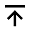

首頁
台灣50
股票分析
關於
Theme
Theme 1
Theme 2
Theme 3
台灣50產業占比
台灣50 成分股，產業前三名: 金融保險業(25.93%)、半導體業(14.81%)、電腦及週邊設備業(11.11%)
MSE vs 產業
MSE越小代表LSTM model 預測出來的股票收盤價越精準，因此MSE<10 的產業model預測出來的股價會接近真實的數值
(y: 公司數，x: 產業類別)
股價變化幅度
由於大立光3008(光電業) 股價變動幅度大過於其他產業太多，導致圖表不容易分析
排除大立光3008後的股價變化幅度
